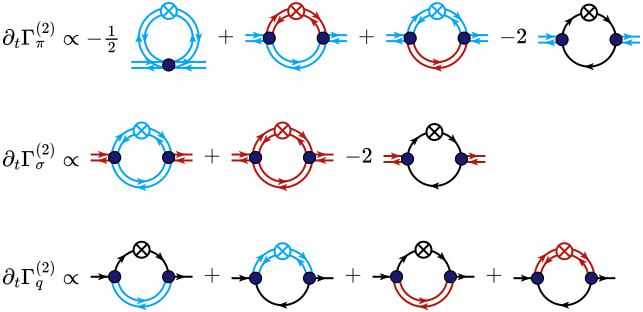
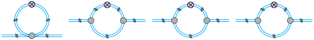
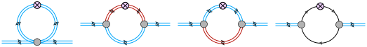
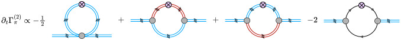
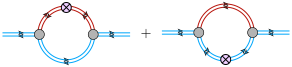
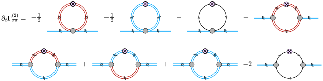

Tutorial
This tutorial builds the two-point flows of the quark–meson model below with the mouse, puts them into a LaTeX paper, and then lets FunKit generate a complete flow equation. Keep the editor open in a second window and follow along; it takes about ten minutes.

Every figure on this page embeds its editable source: download it and use Open… in the editor to continue from that step.
1 The editor at a glance
- The palette on the left holds the tools (each with a one-key shortcut, shown on its button), the line types (fields), the vertex types, the insertions (regulator ⊗ and friends) and the pre-built diagrams. A hint under the tools says what the active tool does.
- The inspector on the right shows what you have selected. With nothing selected it shows the document's style sheet and a list of keyboard shortcuts.
- Everything snaps to the grid. Hold Alt to place freely, or untick Snap in the toolbar.
-
The drawing is kept in this browser between visits, but only Save (Ctrl+S) writes a
.frg.jsonfile you can keep.
2 Place the diagrams
- Click New to start from an empty canvas (Undo brings the old drawing back).
- In the palette, pick Pion under Lines, then Tadpole under Diagrams.
- Click on the canvas. A complete tadpole appears: vertex, legs, loop and the regulator ⊗.
- Pick Polarisation / self-energy and click three more times to the right of the tadpole.

Built-in diagrams use the active line type, and all of them have the same size, taken from the style sheet. Each placed diagram is a group: one click selects the whole diagram, and dragging moves it as one unit, so its shape cannot be deformed by accident. Double-click picks a single line or vertex inside a group.
3 Swap lines and vertices
The diagrams have the right shape, but every line is a pion. Repaint the internal lines with the drawing tools:
- Choose the Line tool (L), pick Sigma in the palette, and click the upper line of the second diagram. Only that line is repainted.
- Still with Sigma, click the lower line of the third diagram.
- Pick Quark and click both lines of the fourth diagram.

- Many lines at once: select a whole diagram (Select tool, V) and click a field in the palette. All its lines change.
- Regulator: in Select mode, drag the ⊗ onto another line to move it there.
- Vertices: the Vertex tool (P) with a vertex type picked in the palette (for example Bare vertex or Hatched blob) changes the vertex you click.
- Arrows: F reverses the arrows of the selected lines, for example a fermion loop running the other way.
4 Add the text terms
The Text tool (T) places TeX, already in math mode:
-
Click empty space to the left of the tadpole. In the inspector, type
\partial_t\Gamma^{(2)}_\pi \propto -\frac12and press Enter. - Click between the diagrams and type
+,+and-2.
Clicking a line or vertex with the Text tool attaches a label instead. It defaults to the field's symbol (π, σ, q, …) and moves with its line. The text is typeset with MathJax on screen and by your paper's LaTeX in the TikZ export.
5 Arrange the rows
Select the terms and diagrams of the row (drag a rubber band around them, or Ctrl+A) and press A (Arrange row). They are placed left to right with equal gaps, on the centre line of the leftmost item.

For the sigma and quark rows, select the pion row, duplicate it (Ctrl+D), move the copy down and repaint it as in step 3. Then select all rows and use ⇤ left under Arrange in the inspector to align their left edges. Group (Ctrl+G) keeps a finished row together.
6 Sum over regulator positions
The flow of a diagram has the regulator insertion ∂tR on each internal line in turn. Select a diagram and click
⊗ on each line → sum in the inspector: the diagram is replaced by copies with the ⊗ on each internal line,
joined by +.

7 Export to your paper
The export buttons are on the right of the toolbar. Tick Selection only to export just the selected part.
- Export PDF
- A vector PDF with TeX fonts, cropped tightly. Include it with
\includegraphics. - TikZ / Copy TikZ
-
The same drawing as a standalone
.texfile, or as atikzpictureon the clipboard to paste into the paper. The labels are then typeset by your paper's LaTeX, in its fonts and macros. - SVG
- For slides and the web.
Every export embeds the editable source. Open… on an exported PDF, SVG or .tex file brings the
diagram back, so a figure in a paper can be edited months later without hunting for the original. Scale and margin of the export are
set in the inspector (nothing selected).
8 Style sheet and types
- Style sheet: with nothing selected, the inspector shows the document's style: line width, double-line spacing, arrow, vertex and ⊗ sizes, loop radius and label sizes. All diagrams share it, so they stay consistent. Preset switches the whole document, e.g. to Journal (black & white), Grayscale or Talk (bold).
- Lines & vertices… edits the types themselves: line style, arrows, colour and TeX symbol of each field, and shape, size, fill, outline and inner text of each vertex type. Add your own fields there (a diquark, a vector meson, …). Changes apply to everything of that type.
- Library… holds the group library, the examples and your own templates. Select a diagram and use Save as template in the inspector; it then appears under Diagrams in the palette. Export my library shares templates and field types with colleagues.
9 Whole flow equations
For a complete flow you don't need to draw anything. Flow… in the toolbar computes the full one-loop flow ∂tΓ(n) of an n-point function from the Wetterich equation, with every diagram and its prefactor, using FunKit by F. R. Sattler, which runs in your browser.
- Open Flow… and choose Quark-meson model: pion 2-point function under Example.
- Under Field content, the ticked line types are the fields: Sigma, Pion and Quark, with the quark marked charged and fermion.
- Under External legs there are two pions. Add or remove legs with the buttons below.
- Click Compute and insert. The equation is added below your drawing, drawn in your style and ready to edit.

-
Restrict the vertices lists the vertices to keep, one per line (e.g.
sigma pion pion; the dialog lists the names), for a smaller truncation. - Regulator chooses between ⊗ on each line (one term per regulator position) and ∂t in front of the diagrams without regulator.
- If you use generated flow equations in your work, please cite FunKit: F. R. Sattler, arXiv:2605.28935 (2026).
10 More tools
- Drawing from scratch
- The Vertex tool (P) places vertices and splits a line you click. The Line tool draws a propagator when you drag from a vertex or from empty space; clicking a vertex adds a self-loop. Drop a line's endpoint onto a vertex to connect it. In Select mode, drag the ◇ handle of a line to bend it.
- Changing a pre-built diagram's shape
- Select it and click Ungroup (edit geometry) in the inspector.
- Insertions
- The Insert tool (R) puts the insertion picked in the palette on the line you click: the regulator ∂tR (⊗), the flowing-field regulator, a dressed-propagator blob or a mass-insertion cross.
- Momentum arrows
- Select a single line (double-click inside a group) and tick Momentum arrow in the inspector.
- Boxes
- The Box tool (B) draws shaded boxes or ellipses behind a diagram, e.g. to mark a resummed part. The inspector sets fill, opacity, outline and corner radius.
- Arranging
- With several items selected, the inspector aligns edges or centres and distributes them evenly. [ and ] rotate by 15° (with Shift: 90°), and the arrow keys nudge.
11 Command line and AI assistants
The same figures can be built without the browser. The frg command (frg.mjs, a single file that
needs Node ≥ 20) turns a JSON figure spec, rows of TeX terms and pre-built diagrams with no coordinates, into TikZ, PDF, SVG, PNG
or an editable .frg.json. The pion row above is this spec:
{
"format": "frg-spec",
"version": 1,
"rows": [[
"\\partial_t\\Gamma^{(2)}_{\\pi} \\propto -\\frac{1}{2}",
{ "diagram": "tadpole", "field": "pion" }, "+",
{ "diagram": "bubble", "field": "pion", "lines": { "upper": "sigma" } }, "+",
{ "diagram": "bubble", "field": "pion", "lines": { "lower": "sigma" } }, "-2",
{ "diagram": "bubble", "field": "pion", "internal": "quark" }
]]
}node frg.mjs build row.json -o row.pdf -o row.frg.json
frg flow does what Flow… does. Open… in the editor also accepts specs.
AI assistants such as Claude can write the specs for you: point them to llms.txt. The full reference is
SPEC.md.